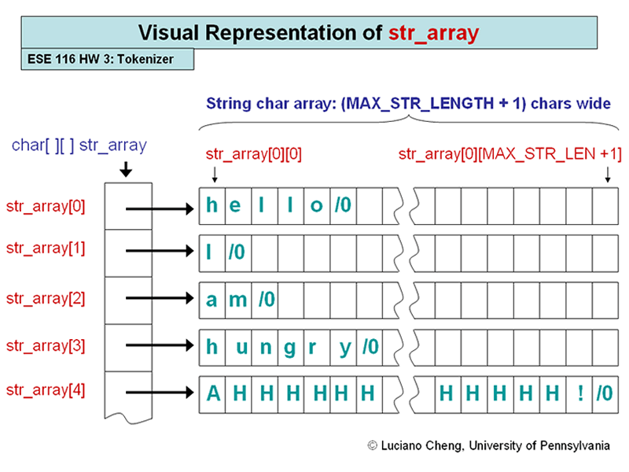

String Tokenizer and Sorter
ESE 116 Fall 2007 Homework 3
Files to Submit: strings.c
Due 10:45am Tuesday 11/06 (Late date is always 24 hrs later)
Purposes of this assignment:
To practice and learn:
- Working with char[][] arrays
- Using the string.h library and getchar()
- Parsing and tokenizing user input
- Constructing strings, and the subtleties involved with NULL termination
- Sorting strings in C
- Learning why covering all the edge cases is half of computer science
Overview:
When writing pieces of software that deal with user input, a tokenizer is a function designed to take user input and cut it up into pieces in order to be parsed. A string tokenizer literally cuts a input string up into smaller strings called "tokens", which can then be parsed as commands.
In this assignment you will be creating a tokenizer. The tokenizer will read input from STDIN using getchar(). While reading, it will look for spaces and newlines and create new "token" words based on their separation with this whitespace. These token words will be stored in an array of strings (char[][], or a char**). After the tokenizer terminates on a EOF (end of file) character, you will write a function to sort the tokens alpha-numerically.
There are two functions you will be writing, getWord and sortWords
- getWord will pull a single word "token" from STANDARD IN
- The main() function will call getWord until there are no tokens left
- packData's first argument is char array where the "token" string is to be written. The second argument is the size of this array. The function packData returns different constants based on whether
- The parser hit a EOF before reading a word "token"
- The parser hit a EOF immediately after reading a word "token"
- The parser read a word with no EOF
- Read the C file for the detailed description.
- sortWords will sort the tokens in place, which are stored in an array of strings
- sortWords will be passed a array of strings, a char[][] (aka a char**)
- sortWords will then sort the words alphanumerically.
- Bubblesort is recommended, however you can use any sorting algorithm you like as long as it follows
the parameters of the assignment and does not use malloc()
- Read the C file for the detailed description.
Important Notes:
- Please remember that for this assignment, you are not allowed to use malloc() in any of the functions you write.
- For those of you lucky enough to be taking CIS 381, it is not ok to copy / paste the supplied shell tokenizer code into this homework. We will be checking for this and things similar. Trust me, it's easier just to write your own.
- You are not allowed to use qsort(), or any of the sorting functions provided in stdlib. You must implement the sorting yourself.
- A bash shell tester will be posted over the weekend to test cases for the tokenizer
- Please re-read the strings.h slides before you start, and try to use the strings.h library as much as possible. If strings.h is used properly, the sorter can be written in under 15 lines.
- Homework assignments should be done alone. We will be comparing your homeworks to make sure this occurs.
- Help is available via the bulletin board, office hours, and during the optional lab. TA's are also often available after class on Tuesday.
- Please be respectful of the TAs' time and refrain from emailing them individually. The TA's take turns answering questions on the bulletin board. Please ask questions on the bulletin board or bring them to office hours.
- At the top of the Content page, read the posted Homework Submission and Policy Information
- At the top of the Content page, see the link to use for submitting homework.
Diagram:

Files: